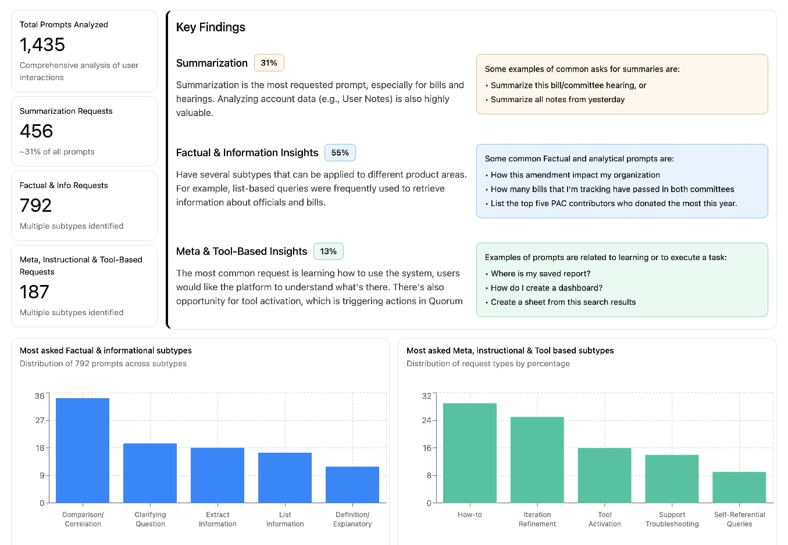
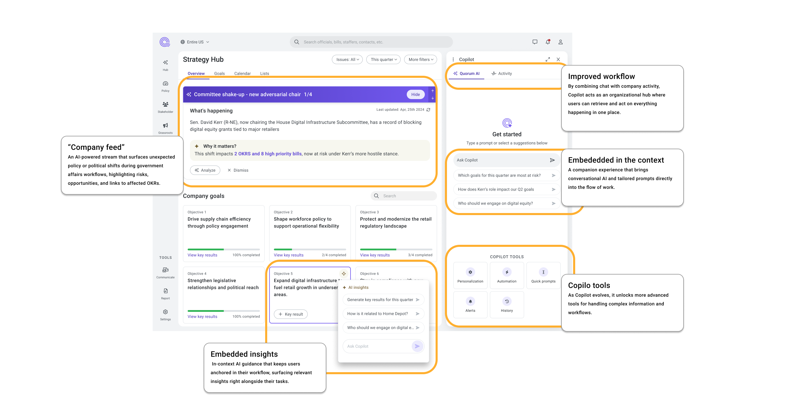

The problem
When AI became a company priority, the first instinct was to add AI features to existing workflows. But this immediately raised a deeper question: what role should AI actually play in the product?
I worked with the Product Director and VP to shape a strategic vision for the platform’s AI experience, defining how AI should integrate across the product. I then coordinated my team’s work across concepts and prototypes, enabling each designer to contribute their expertise while taking ownership of their part of the strategy.
The problem wasn't just choosing which AI capabilities to build. It was defining how users should interact with AI in a way that felt useful, understandable, and integrated into their work. Without that clarity, AI risked becoming a collection of disconnected tools that added complexity rather than value.
Impact
This work established the first shared vision for how AI should behave across the product. It aligned different squads around a clear direction and helped shift the conversation from “adding AI features” to designing AI-supported workflows, serving as a foundation to inform roadmap planning. The deliverables included:
- Product assessment: Review of usability and early AI capabilities
- Interaction patterns study: Benchmark of emerging AI UX models
- AI-enhanced journey maps: Mapping AI into core workflows
- Vision prototype: Interactive concept of AI-augmented tasks
Discovery
Two sources of user information was used as foundations for this work: Quorum anual usability survey and AI beta analysis of user behavior:
Annual usability survey
Because this is a continuous survey, it reveals patterns that one-off research often misses. I synthesized findings across different years to uncover the workflow complexity as a systemic issue in the system. This context proved critical when evaluating AI. If the underlying workflows were already complex, layering AI onto them risked amplifying that complexity instead of reducing it.

AI beta
The beta showed strong curiosity and willingness to experiment. But interactions were often unclear and disconnected from real tasks. Users didn't just need AI conversational capabilities. They primarily wanted to use the Quorum AI to clarify the system and to have a quick assessment of bills.

Findings
Together, these signals revealed an important design challenge. If AI were introduced as a separate capability, it would likely increase cognitive load. But if integrated thoughtfully, it could help reduce the very complexity users were struggling with. This shifted our perspective from adding AI features to designing AI-supported workflows.

Exploration
To understand AI adoption, we explored in-context interactions rather than jumping directly into conversational. Instead of asking users to “go use AI,” the product should bring AI to the moment where work is already happening. To clarify that, I broke the UI of AI in three types of interactions:
- AI as a tool: Users trigger AI intentionally to complete a specific task. This approach offered clarity and control, but risked limiting the value of AI to isolated moments rather than improving the broader workflow.
- AI as an assistant: AI suggests actions, insights, or content while users work. This model created opportunities for proactive support, but raised questions about predictability and trust.
- AI embedded in workflows: AI becomes part of how tasks happen, supporting users within existing flows. This direction had the most potential to reduce friction, but required careful design to ensure users understood what the system was doing.
Results
Following the research findings, rather than adding AI as a feature alone, the team focused on weaving intelligence into the product's structure, supporting how people already think, plan, and act. For that, I come up with the following principles for Quorum AI:
Design around workflows, not features
User research consistently revealed that the real challenge wasn't learning individual tools, but navigating complex workflows across the platform. Ongoing surveys and product insights highlighted friction in how people moved between tasks. Framing the problem this way also helped leadership understand that navigation issues were systemic, not isolated usability problems. Designing around workflows reduced fragmentation and created clearer paths through the product, which also made AI assistance more relevant and timely.
AI works best in context
AI proved most valuable when embedded directly into the workflow rather than positioned as a separate destination. Instead of asking users to switch tools, the system could surface assistance at the exact moment it was needed. In this model, AI becomes part of the interface itself, helping people interpret information, move faster, and make decisions without interrupting their flow.
Reporting as a core user flow
As the platform expanded through acquisitions, capabilities increased but visibility became fragmented. Reporting lived in multiple places, making it difficult to understand progress across the system. Bringing these signals together created a shared understanding of outcomes and impact. With a unified view, AI could help surface patterns, highlight changes, and turn complex data into meaningful insights.

Strategy needs shared context
Teams using the platform often worked on very different initiatives at the same time, from advocacy campaigns to regulatory analysis. A strategy workspace helped connect these efforts, allowing users to understand how individual work contributed to broader organizational goals. By making context visible, the product helped teams stay aligned while priorities evolved.

Reflection & learnings
Skills learned
Over the years, one key learning stood out: design vision is often reduced to imagining a “beautiful experience,” but that vision becomes hollow when it ignores transition. Users don't want to relearn everything from scratch. Meaningful design acknowledges what already exists and uses the interface itself to scaffold change, guiding users from the familiar to the new with intention.
Involving the entire team and guiding them through this process was a new challenge. At the same time, it was deeply rewarding to see people take ownership of the product domain they already knew and feel empowered to explore new possibilities on their own.
These concepts were translated into squad roadmaps, starting with MVPs and structured to enable coordinated execution across multiple teams